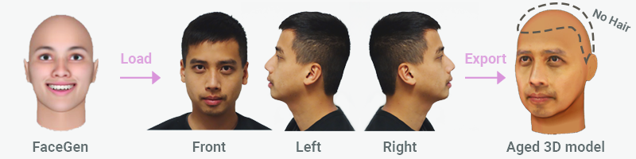
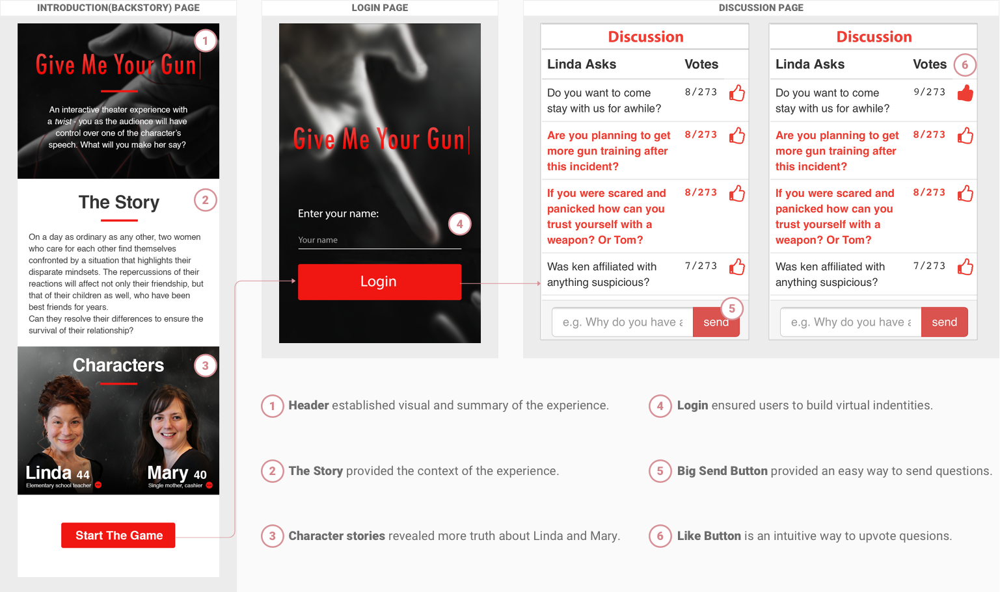

Clinical Trials
This research software is for use in hospital clinical trials. In the trial, patients will see themselves age in VR.
Phase 1
Building A Viable Deployment Pipeline
The FaceGen software developed by Singular Inversions was required by the client to generate facial age progression 3D model based on other successful studies.
Our early mission was to incorporate the output of FaceGen with Oculus Go VR headset.
What FaceGen can do:
Generate a parameter-driven 3D head model with one frontal, and 2 side (left, right) photos.
What FaceGen can't do:
Generate specific characteristics that help personalize the 3D representation of the user’s face (e.g. hairstyles, facial features etc)
Looking at hairstyle creation:
Plans to create hairstyles:
I decided to generate hair by making a variety of 3D mesh hairstyles, due to processing performance, good fidelity, and reasonable development time.
After I decided how to create the hairstyles, the pipeline became clear. I needed to create a software to load the 3D head model from FaceGen, attach the hairstyle, then push the final model to the Oculus Go.
Phase 2
Building The Core Functions
The 3 core functions of this software are:
User Interface & Flow
Design Iterations

Phase 3
Final Result In Oculus Go
Our client wanted a simple VR experience that simulates looking into a mirror with the natural scape background.

Game card

Game poster
Lesson Learned
Design perspective:
- Creating workarounds in the design when our team ran into technical hurdles.
- Understanding the context of the research trial and updating the design accordingly.
Making a modular framework for installing different hairstyles on the models.
The researchers needed an approximation of facial features, and quickly generating models was more valuable for them vs. photorealistic mockups. As a result, I slimmed down the options to emphasize ease and quickness for the researchers to focus more of their attention on participant interaction.
Client relationship perspective:
- Working hard in the beginning of the project to define scope and accurately determine time commitment needed to ensure staying under budget.
- Meeting frequently with the client to update the pipeline and design. This meant shorter sprints to allow the client to have more input in the design features.